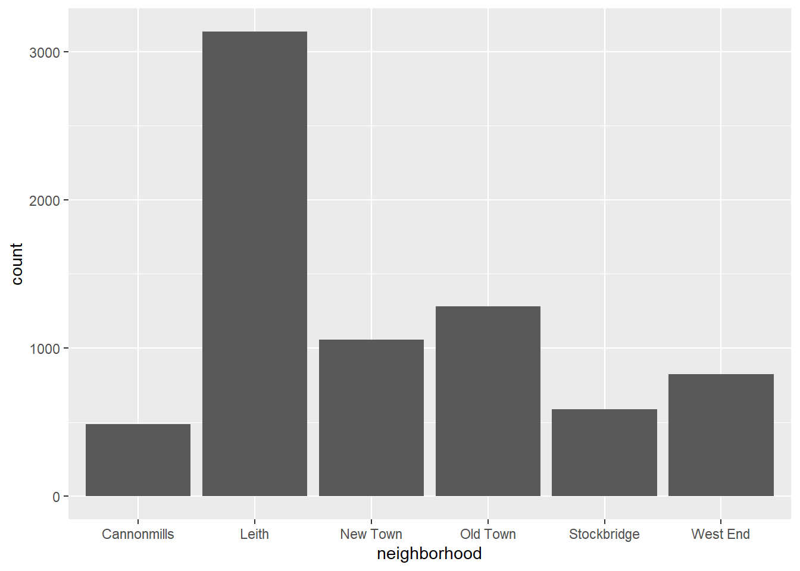
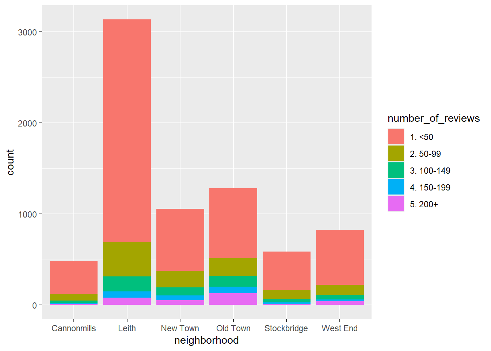
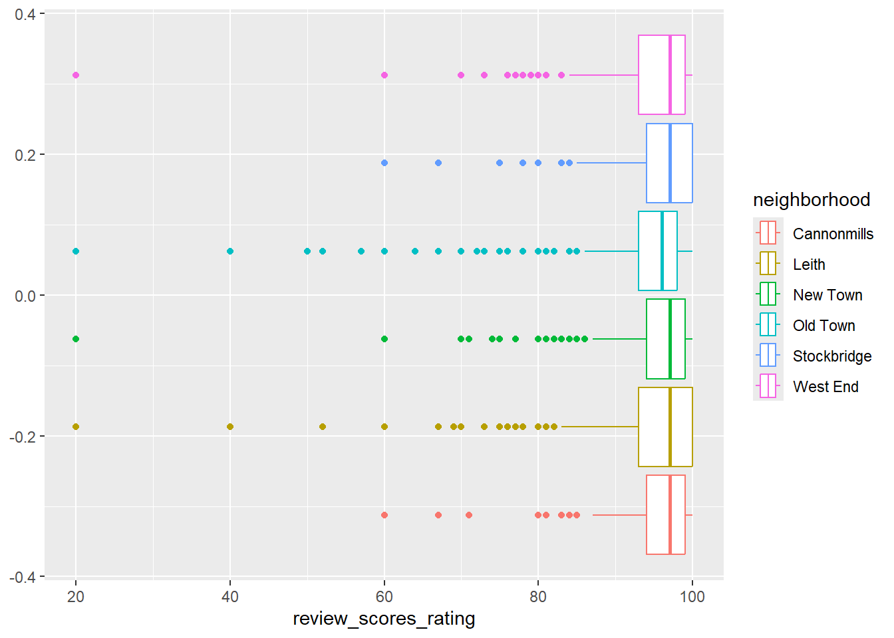
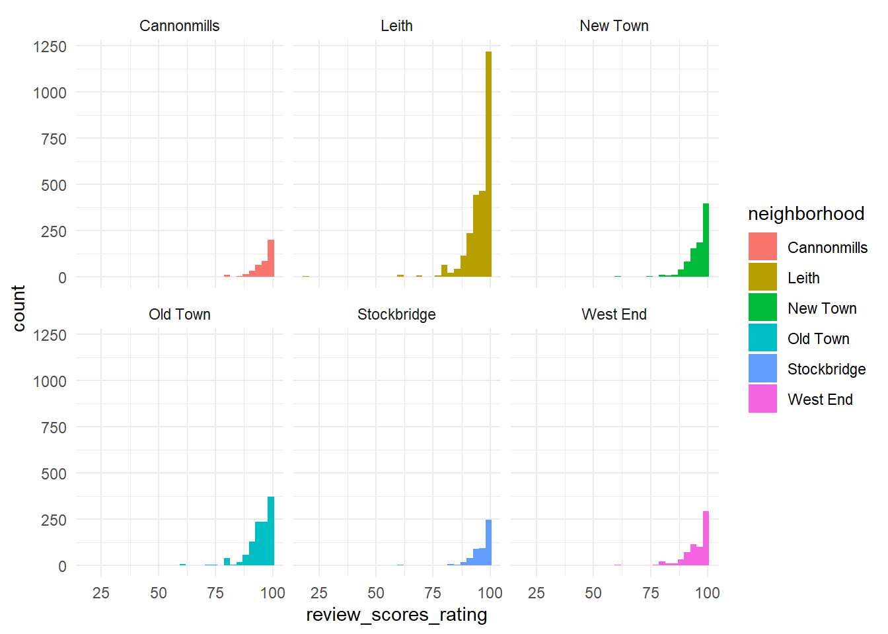
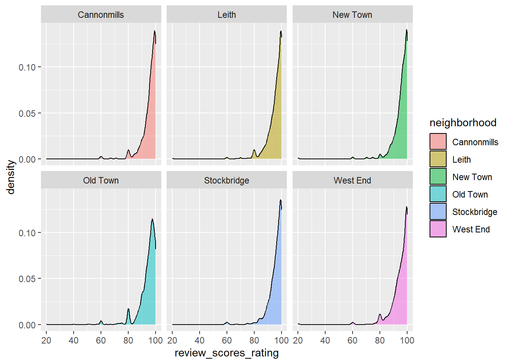

install.packages("tidyverse")
install.packages("fivethirtyeight")
install.packages("janitor")
install.packages("labelled")Day 1- Solutions
Getting Started
Installing Packages
OR
install.packages(c("tidyverse","fivethirtyeight",
"janitor","labelled"))Load Packages
library(tidyverse)── Attaching core tidyverse packages ──────────────────────── tidyverse 2.0.0 ──
✔ dplyr 1.1.4 ✔ readr 2.1.5
✔ forcats 1.0.0 ✔ stringr 1.5.1
✔ ggplot2 3.5.2 ✔ tibble 3.3.0
✔ lubridate 1.9.4 ✔ tidyr 1.3.1
✔ purrr 1.1.0
── Conflicts ────────────────────────────────────────── tidyverse_conflicts() ──
✖ dplyr::filter() masks stats::filter()
✖ dplyr::lag() masks stats::lag()
ℹ Use the conflicted package (<http://conflicted.r-lib.org/>) to force all conflicts to become errorslibrary(fivethirtyeight)Some larger datasets need to be installed separately, like senators and
house_district_forecast. To install these, we recommend you install the
fivethirtyeightdata package by running:
install.packages('fivethirtyeightdata', repos =
'https://fivethirtyeightdata.github.io/drat/', type = 'source')library(janitor)Warning: package 'janitor' was built under R version 4.5.1
Attaching package: 'janitor'
The following objects are masked from 'package:stats':
chisq.test, fisher.testlibrary(labelled)Data Visualization
Load Data
edibnb <- readRDS("PATHNAME/edibnb.RDS")Exercises
- How many observations (rows) does the dataset have?
nrow(edibnb)[1] 7369Run
View(edibnb)in your console to view the data in the data viewer. What does each row in the dataset represent?Create a barchart:
- Displaying the count of listings in each neighborhood
ggplot(edibnb, aes(x = neighborhood)) +
geom_bar()
b. Add different colors for the number of reviews ggplot(edibnb, aes(x = neighborhood, fill = number_of_reviews)) +
geom_bar()
- Create a visualization that will help you compare the distribution of review scores (
review_scores_rating) across neighborhoods.
ggplot(edibnb, aes(x = review_scores_rating, color = neighborhood)) +
geom_boxplot()Warning: Removed 1069 rows containing non-finite outside the scale range
(`stat_boxplot()`).
ggplot(edibnb, aes(x = review_scores_rating, fill = neighborhood)) +
geom_histogram() +
facet_wrap(~neighborhood) +
theme_minimal()`stat_bin()` using `bins = 30`. Pick better value with `binwidth`.Warning: Removed 1069 rows containing non-finite outside the scale range
(`stat_bin()`).
ggplot(edibnb, aes(x = review_scores_rating, fill = neighborhood)) +
geom_density(alpha = .5) +
facet_wrap(~neighborhood)Warning: Removed 1069 rows containing non-finite outside the scale range
(`stat_density()`).
Tidy Data
Take your plot code and change it so it uses a pipe (%>%) workflow instead of calling the data directly in ggplot()
edibnb %>%
ggplot(aes(x = review_scores_rating, color = neighborhood)) +
geom_boxplot()Warning: Removed 1069 rows containing non-finite outside the scale range
(`stat_boxplot()`).
edibnb %>%
ggplot(aes(x = review_scores_rating, fill = neighborhood)) +
geom_histogram() +
facet_wrap(~neighborhood) +
theme_minimal()`stat_bin()` using `bins = 30`. Pick better value with `binwidth`.Warning: Removed 1069 rows containing non-finite outside the scale range
(`stat_bin()`).
edibnb %>%
ggplot(aes(x = review_scores_rating, fill = neighborhood)) +
geom_density(alpha = .5) +
facet_wrap(~neighborhood)Warning: Removed 1069 rows containing non-finite outside the scale range
(`stat_density()`).
Single Dataset - select, arrange, filter, distinct, count
Review the data
college_recent_grads# A tibble: 173 × 21
rank major_code major major_category total sample_size men women
<int> <int> <chr> <chr> <int> <int> <int> <int>
1 1 2419 Petroleum Engi… Engineering 2339 36 2057 282
2 2 2416 Mining And Min… Engineering 756 7 679 77
3 3 2415 Metallurgical … Engineering 856 3 725 131
4 4 2417 Naval Architec… Engineering 1258 16 1123 135
5 5 2405 Chemical Engin… Engineering 32260 289 21239 11021
6 6 2418 Nuclear Engine… Engineering 2573 17 2200 373
7 7 6202 Actuarial Scie… Business 3777 51 2110 1667
8 8 5001 Astronomy And … Physical Scie… 1792 10 832 960
9 9 2414 Mechanical Eng… Engineering 91227 1029 80320 10907
10 10 2408 Electrical Eng… Engineering 81527 631 65511 16016
# ℹ 163 more rows
# ℹ 13 more variables: sharewomen <dbl>, employed <int>,
# employed_fulltime <int>, employed_parttime <int>,
# employed_fulltime_yearround <int>, unemployed <int>,
# unemployment_rate <dbl>, p25th <dbl>, median <dbl>, p75th <dbl>,
# college_jobs <int>, non_college_jobs <int>, low_wage_jobs <int>glimpse(college_recent_grads)Rows: 173
Columns: 21
$ rank <int> 1, 2, 3, 4, 5, 6, 7, 8, 9, 10, 11, 12, 13,…
$ major_code <int> 2419, 2416, 2415, 2417, 2405, 2418, 6202, …
$ major <chr> "Petroleum Engineering", "Mining And Miner…
$ major_category <chr> "Engineering", "Engineering", "Engineering…
$ total <int> 2339, 756, 856, 1258, 32260, 2573, 3777, 1…
$ sample_size <int> 36, 7, 3, 16, 289, 17, 51, 10, 1029, 631, …
$ men <int> 2057, 679, 725, 1123, 21239, 2200, 2110, 8…
$ women <int> 282, 77, 131, 135, 11021, 373, 1667, 960, …
$ sharewomen <dbl> 0.1205643, 0.1018519, 0.1530374, 0.1073132…
$ employed <int> 1976, 640, 648, 758, 25694, 1857, 2912, 15…
$ employed_fulltime <int> 1849, 556, 558, 1069, 23170, 2038, 2924, 1…
$ employed_parttime <int> 270, 170, 133, 150, 5180, 264, 296, 553, 1…
$ employed_fulltime_yearround <int> 1207, 388, 340, 692, 16697, 1449, 2482, 82…
$ unemployed <int> 37, 85, 16, 40, 1672, 400, 308, 33, 4650, …
$ unemployment_rate <dbl> 0.018380527, 0.117241379, 0.024096386, 0.0…
$ p25th <dbl> 95000, 55000, 50000, 43000, 50000, 50000, …
$ median <dbl> 110000, 75000, 73000, 70000, 65000, 65000,…
$ p75th <dbl> 125000, 90000, 105000, 80000, 75000, 10200…
$ college_jobs <int> 1534, 350, 456, 529, 18314, 1142, 1768, 97…
$ non_college_jobs <int> 364, 257, 176, 102, 4440, 657, 314, 500, 1…
$ low_wage_jobs <int> 193, 50, 0, 0, 972, 244, 259, 220, 3253, 3…Exercises
- Which major has the highest percentage of women? (Hint: use
arrange(desc())to easily see the top items). Output only relevant variables
college_recent_grads %>%
arrange(desc(sharewomen)) %>%
select(major, major_category, sharewomen)# A tibble: 173 × 3
major major_category sharewomen
<chr> <chr> <dbl>
1 Early Childhood Education Education 0.969
2 Communication Disorders Sciences And Services Health 0.968
3 Medical Assisting Services Health 0.928
4 Elementary Education Education 0.924
5 Family And Consumer Sciences Industrial Arts & C… 0.911
6 Special Needs Education Education 0.907
7 Human Services And Community Organization Psychology & Social… 0.906
8 Social Work Psychology & Social… 0.904
9 Nursing Health 0.896
10 Miscellaneous Health Medical Professions Health 0.881
# ℹ 163 more rows- Get a list of STEM majors that have median earnings < $36,000 (Hint: use the
%in%to see if the major_category is instem_categories). Output only relevant variables
stem_categories <- c(
"Biology & Life Science",
"Computers & Mathematics",
"Engineering",
"Physical Sciences"
)
stem_categories[1] "Biology & Life Science" "Computers & Mathematics"
[3] "Engineering" "Physical Sciences" college_recent_grads %>%
filter(major_category %in% stem_categories & median < 36000) %>%
select(major, major_category, median)# A tibble: 10 × 3
major major_category median
<chr> <chr> <dbl>
1 Environmental Science Biology & Life Science 35600
2 Multi-Disciplinary Or General Science Physical Sciences 35000
3 Physiology Biology & Life Science 35000
4 Communication Technologies Computers & Mathematics 35000
5 Neuroscience Biology & Life Science 35000
6 Atmospheric Sciences And Meteorology Physical Sciences 35000
7 Miscellaneous Biology Biology & Life Science 33500
8 Biology Biology & Life Science 33400
9 Ecology Biology & Life Science 33000
10 Zoology Biology & Life Science 26000- Output a count of the number of majors in each major_category
college_recent_grads %>%
count(major_category)# A tibble: 16 × 2
major_category n
<chr> <int>
1 Agriculture & Natural Resources 10
2 Arts 8
3 Biology & Life Science 14
4 Business 13
5 Communications & Journalism 4
6 Computers & Mathematics 11
7 Education 16
8 Engineering 29
9 Health 12
10 Humanities & Liberal Arts 15
11 Industrial Arts & Consumer Services 7
12 Interdisciplinary 1
13 Law & Public Policy 5
14 Physical Sciences 10
15 Psychology & Social Work 9
16 Social Science 9